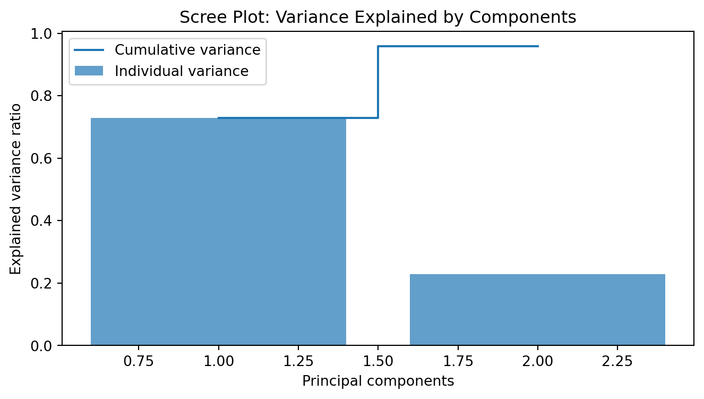
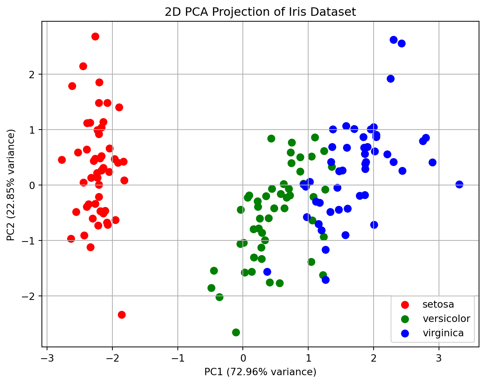

array(['city=Dubai', 'city=London', 'city=San Francisco', 'temperature'],
dtype=object)3. Feature Engineering
3316512 Pharmaceutical AI
Natapol Pornputtapong, PhD
Chulalongkorn University
11 Mar 2026
Feature Engineering
feature: numeric representation of raw data
make the most suitable set of numeric representation for machine learning algorithms
Feature Engineering methods
- Extraction
- Transformation
- Selection
- Image augmentation
Extraction
Loading features from dicts
DictVectorizer- transforms lists of feature-value mappings to vectors
- useful for training sequence classifiers in NLP
DictVectorizer
Feature Hashing
FeatureHasher- high-speed, low-memory vectorizer
- uses feature hashing (hashing trick)
- does not store the features (no
inverse_transform)
FeatureHasher
def token_features(token, part_of_speech):
if token.isdigit():
yield "numeric"
else:
yield "token={}".format(token.lower())
yield "token,pos={},{}".format(token.lower(), part_of_speech)
if token[0].isupper():
yield "uppercase"
if token.istitle():
yield "titlecase"
if token.endswith("s"):
yield "ends_with_s"
raw_data = [
("This", "DT"),
("is", "VB"),
("a", "DT"),
("test", "NN"),
]
from sklearn.feature_extraction import FeatureHasher
hasher = FeatureHasher(input_type="string")
X = hasher.transform(token_features(*s) for s in raw_data)
# X.toarray()Text Feature Extraction
- Bag of Words representation
- tokenizing strings and giving an integer id for each possible token
- counting the occurrences of tokens in each document
- normalizing and weighting with diminishing importance tokens that occur in the majority of samples / documents
CountVectorizer
from sklearn.feature_extraction.text import CountVectorizer
vectorizer = CountVectorizer()
corpus = [
'This is the first document.',
'This is the second second document.',
'And the third one.',
'Is this the first document?',
]
X = vectorizer.fit_transform(corpus)
X.toarray()
vectorizer.get_feature_names_out()array(['and', 'document', 'first', 'is', 'one', 'second', 'the', 'third',
'this'], dtype=object)Tf-idf term weighting
- Term Frequency times Inverse Document Frequency
- re-weight the count features into floating point values suitable for usage by a classifier
TfidfTransformer,TfidfVectorizer
TfidfVectorizer
Why transform?
feature and model assumptions must be met
Ex: linear regression assumes a linear relationship between the variable Y and all numerical variables X.
if not met, need to transform the numerical variable X (e. g. weight 67kg, 78kg, etc.) using log orinto a categorical variable (e. g. weight 60-70kg, 70-80kg, etc.).
Transformation
- numerical transfor
- algebraic function
- dimension reduction
- scaling
- binning
- categorical transform
- one-hot encoding
- label encoding
- ordinal encoding
- target encoding
Algebraic function
- log transform
Scaling
- Standardization
- Scaling to a range
- MinMaxScaler
- MaxAbsScaler
Standardization
- removing the mean and scaling to unit variance
- sensitive to outliers
MinMaxScaler
- rescales the data in the range [0, 1] based on the min and max values of the feature
- very sensitive to outliers
MaxAbsScaler
- rescales the data in the range based on the max absolute value of the feature
- range
- [0, 1] if only positive values are present
- [-1, 0] if only negative values are present
- [-1, 1] if both negative and positive values are present
- sensitive to outliers
RobustScaler
- scales the data according to the percentiles
- robust to outliers
PowerTransformer
- applies a power transformation to the data
- Box-Cox applied to strictly positive data
- Yeo-Johnson applied to data with both positive and negative
- make the data more normally distributed
- robust to outliers
QuantileTransformer
- applies a quantile transformation to the data
- uniform distribution
- normal distribution
- robust to outliers
array([[0. ],
[0.09871873],
[0.10643612],
[0.11754671],
[0.21017437],
[0.21945445],
[0.23498666],
[0.32443642],
[0.33333333],
[0.41360794],
[0.42339464],
[0.46257841],
[0.47112236],
[0.49834237],
[0.59986536],
[0.63390302],
[0.66666667],
[0.68873101],
[0.69611125],
[0.81280699],
[0.82160354],
[0.88126439],
[0.90516028],
[0.99319435],
[1. ]])Outlier Detection
Encoding
- One-Hot Encoding
- Ordinal Encoding
- Label Encoding
One-Hot Encoding
Ordinal Encoding
Binning
- KBinsDiscretizer
- Binarizer
array([[0., 0., 0., 0.],
[1., 1., 1., 0.],
[2., 2., 2., 1.],
[2., 2., 2., 2.]])curse of dimensionality
PCA using Scikit-Learn
PCA: principal component analysis
For this example, we’ll use the classic Iris dataset. It has 4 features, but we’ll compress it into 2 dimensions to see how well we can separate the classes.
The Setup & Preprocessing
Standardization is mandatory for PCA. Since PCA maximizes variance, a feature with a large scale (like “Salary” in the thousands) would dominate a feature with a small scale (like “Years of Experience”), even if it’s less important.
import numpy as np
import pandas as pd
import matplotlib.pyplot as plt
import seaborn as sns
from sklearn.datasets import load_iris
from sklearn.preprocessing import StandardScaler
from sklearn.decomposition import PCA
# Load data
iris = load_iris()
X = iris.data
y = iris.target
feature_names = iris.feature_names
# 1. Standardize the data (Mean=0, Variance=1)
scaler = StandardScaler()
X_scaled = scaler.fit_transform(X)2. Applying PCA
We will reduce the 4D data into 2D.
The Scree Plot (Explained Variance)
This tells you how much “information” (variance) each principal component captures.
plt.figure(figsize=(8, 4))
explained_var = pca.explained_variance_ratio_
plt.bar(range(1, len(explained_var)+1), explained_var, alpha=0.7, label='Individual variance')
plt.step(range(1, len(explained_var)+1), np.cumsum(explained_var), where='mid', label='Cumulative variance')
plt.ylabel('Explained variance ratio')
plt.xlabel('Principal components')
plt.legend(loc='best')
plt.title('Scree Plot: Variance Explained by Components')
plt.show()
PCA loading plot
2D Projection
This is where we see if our dimensionality reduction actually preserved the structure of the data.
plt.figure(figsize=(8, 6))
targets = [0, 1, 2]
colors = ['r', 'g', 'b']
for target, color in zip(targets, colors):
indicesToKeep = pca_df['Target'] == target
plt.scatter(pca_df.loc[indicesToKeep, 'PC1'],
pca_df.loc[indicesToKeep, 'PC2'],
c=color, s=50)
plt.xlabel(f'PC1 ({explained_var[0]:.2%} variance)')
plt.ylabel(f'PC2 ({explained_var[1]:.2%} variance)')
plt.title('2D PCA Projection of Iris Dataset')
plt.legend(iris.target_names)
plt.grid()
plt.show()
Feature Selection
- Removing features with low variance
- Univariate feature selection
- Recursive feature elimination
- Feature selection using SelectFromModel
Removing features with low variance
VarianceThreshold- a simple baseline approach to feature selection
- It removes all features whose variance doesn’t meet some threshold.
- By default, it removes all zero-variance features
VarianceThreshold
Univariate feature selection
- selects the best features based on univariate statistical tests
SelectKBestremoves all but the k highest scoring featuresSelectPercentileremoves all but a user-specified highest scoring percentage of features
SelectKBest
Recursive feature elimination
- given an external estimator that assigns weights to features
- select features by recursively considering smaller and smaller sets of features
RFE
RFE
from sklearn.datasets import make_friedman1
from sklearn.feature_selection import RFE
from sklearn.svm import SVR
X, y = make_friedman1(n_samples=50, n_features=10, random_state=0)
estimator = SVR(kernel="linear")
selector = RFE(estimator, n_features_to_select=5, step=1)
selector = selector.fit(X, y)
print(selector.support_)
print(selector.ranking_)[ True True True True True False False False False False]
[1 1 1 1 1 6 4 3 2 5]Feature selection using SelectFromModel
SelectFromModelis a meta-transformer that can be used alongside any estimator that assigns importance to each feature- (e.g.
coef_,feature_importances_)
L1-based feature selection
- Linear models penalized with the L1 norm have sparse solutions
- estimated coefficients are zero
from sklearn.svm import LinearSVC
from sklearn.datasets import load_iris
from sklearn.feature_selection import SelectFromModel
X, y = load_iris(return_X_y=True)
print(X.shape)
lsvc = LinearSVC(C=0.01, penalty="l1", dual=False).fit(X, y)
model = SelectFromModel(lsvc, prefit=True)
X_new = model.transform(X)
print(X_new.shape)(150, 4)
(150, 3)Tree-based feature selection
- Tree-based estimators can be used to compute impurity-based feature importances
from sklearn.ensemble import ExtraTreesClassifier
from sklearn.datasets import load_iris
from sklearn.feature_selection import SelectFromModel
X, y = load_iris(return_X_y=True)
print(X.shape)
clf = ExtraTreesClassifier(n_estimators=50)
clf = clf.fit(X, y)
print(clf.feature_importances_)
model = SelectFromModel(clf, prefit=True)
X_new = model.transform(X)
print(X_new.shape) (150, 4)
[0.09231394 0.05892657 0.43374354 0.41501595]
(150, 2)Data leakage